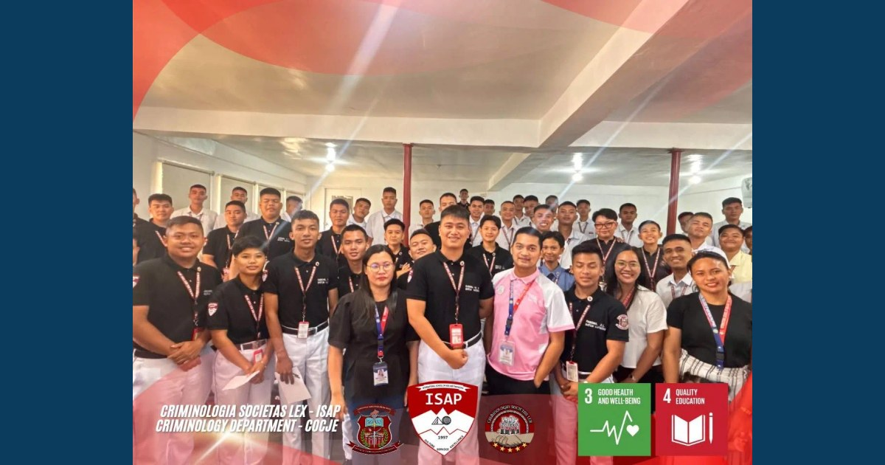

PROJECT RELIEF: Let It Out, Lift It Up! — Student Resilience & Mental Wellness Program

The College of Criminal Justice Education (CoCJE), in collaboration with the Research and Development Center (RDC) and the Office of Guidance Services, concluded Project RELIEF: a structured three-session research-utilization initiative that transformed student wellness concerns into actionable strategies for emotional awareness, cognitive reframing, and self-care.
Read full article